Guía completa para administrar tu agencia de viajes y transporte turístico: tu sitio web, el cotizador, los apartados y tu panel de control.
Celaya, Guanajuato Panel de administración 2026
¡Bienvenido a tu sistema!
Este manual te acompaña paso a paso para que aproveches al máximo Flamingos Tour: la página web donde tus clientes cotizan y apartan, y el panel privado donde tú controlas todo tu negocio.
No necesitas conocimientos técnicos. Cada tarea está explicada con pasos numerados y capturas de pantalla reales del sistema.
Acceso rápido: Tu sitio está disponible en internet las 24 horas. Tú solo necesitas tu usuario y contraseña para entrar al panel de administración desde cualquier computadora o celular.
Sitio web públicoLo que ven tus clientes: unidades, viajes, destinos y el cotizador.
Panel de administraciónTu centro de control: prospectos, apartados, unidades, viajes y pagos.
Es la primera impresión que se lleva tu cliente. Aquí presentas tus unidades, tus próximos viajes, tus destinos y la confianza que da tu agencia, con un botón siempre presente para cotizar.
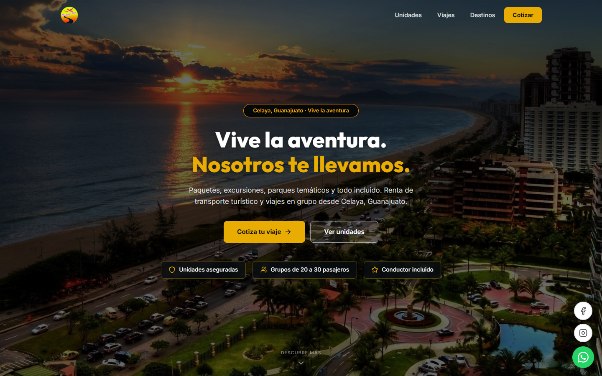
Portada de bienvenida: el mensaje principal, el botón «Cotiza tu viaje» y los puntos que generan confianza.
Secciones que forman tu página
Portada principal: el lema «Vive la aventura. Nosotros te llevamos.» con los botones Cotiza tu viaje y Ver unidades.
Nuestras unidades: tus vehículos con fotos, capacidad y equipamiento.
Próximos viajes: los charters o viajes programados con precio por lugar.
Reserva tu lugar: formulario rápido para apartar un charter.
Sobre nosotros, garantías, extras, destinos y testimonios: refuerzan la confianza del cliente.
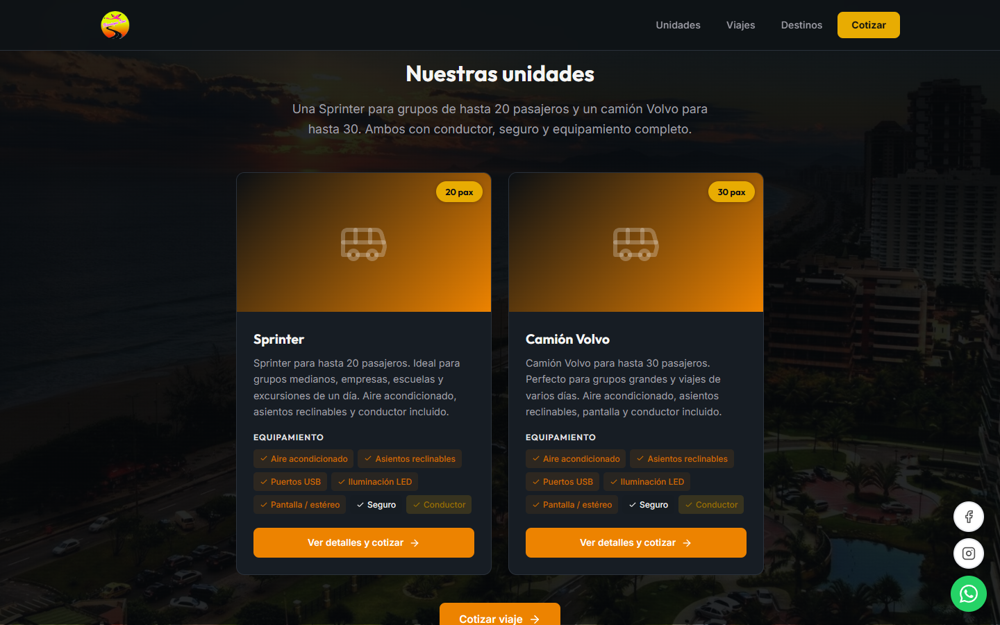
Sección «Nuestras unidades». Cada tarjeta muestra la capacidad, el equipamiento y un botón para ver detalles y cotizar.
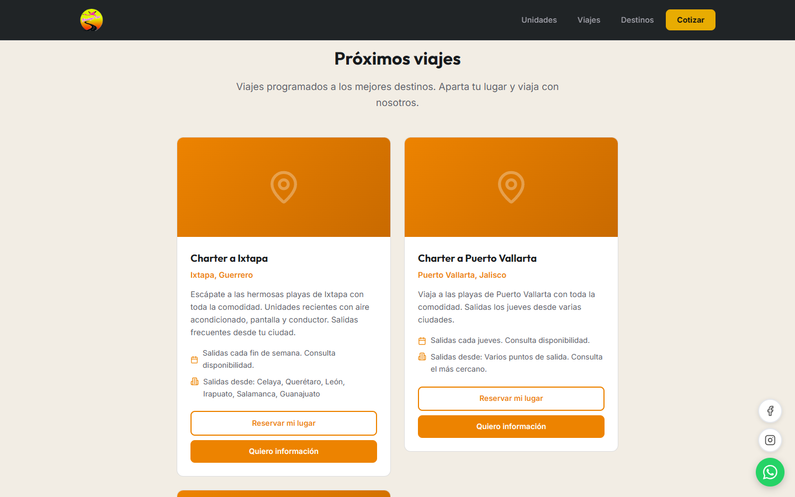
Sección «Próximos viajes»: los charters programados. Si aún no hay ninguno, se muestra un aviso de «Próximamente».
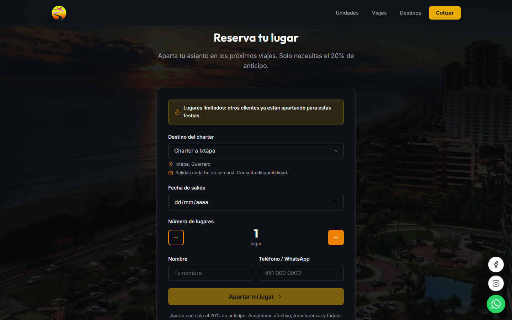
Formulario «Reserva tu lugar»: el cliente elige el viaje, la fecha y cuántos lugares necesita; se guarda y pasa al cotizador.
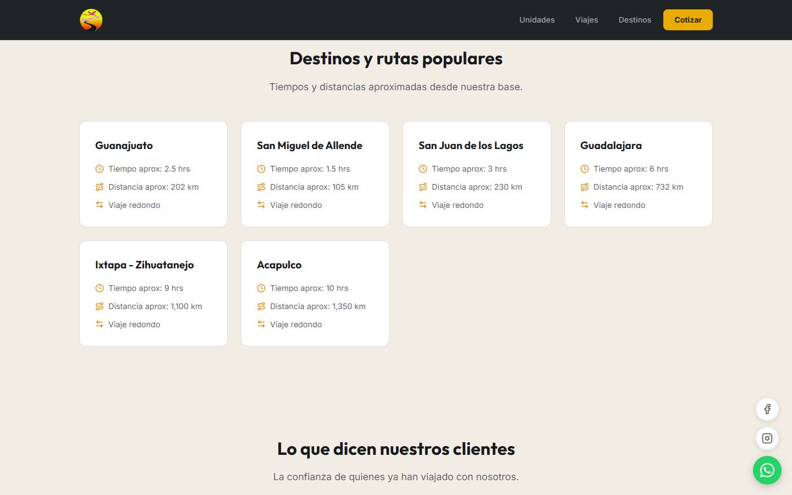
Sección «Destinos y rutas populares» con tiempos y distancias aproximadas desde tu base en Celaya.
Consejo: todo lo que aparece en esta página (unidades, viajes y textos) se administra desde tu panel. Si actualizas una unidad o un viaje, la página se actualiza sola.
2
El cotizador de viajes
Es tu mejor vendedor. El cliente elige su ruta, fechas y número de pasajeros, y el sistema le muestra el precio en segundos, sin esperar a que alguien conteste WhatsApp.
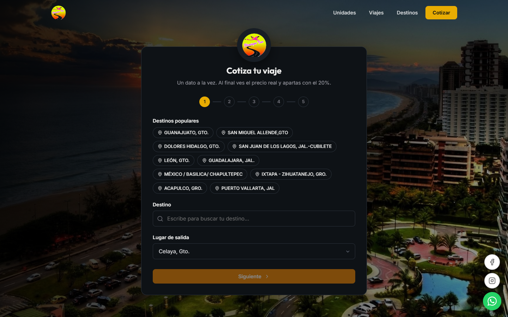
El cotizador guía al cliente por pasos y calcula el precio automáticamente según la unidad y la ruta.
Los pasos que sigue tu cliente
1
RutaElige el lugar de salida y el destino (o escribe «otro» para cotización manual).
2
FechasIndica la fecha de salida y el regreso.
3
PasajerosEl sistema recomienda la unidad ideal (Sprinter hasta 20 o Camión Volvo hasta 30).
4
ContactoDeja su nombre, teléfono y correo.
5
ResumenVe el desglose del precio y puede Apartar mi viaje o pedir informacion por WhatsApp.
Importante: cada persona que cotiza queda registrada automáticamente como prospecto en tu panel. Así nunca pierdes un cliente interesado.
3
El apartado con anticipo
Cuando el cliente decide reservar, pasa a esta pantalla para apartar su viaje pagando solo un porcentaje del total. Tú eliges los datos bancarios desde el panel.
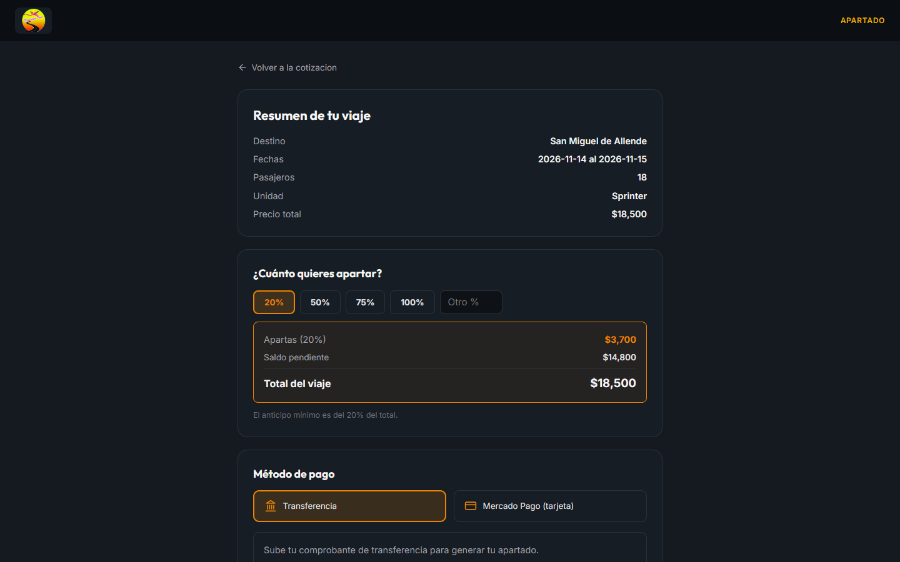
Pantalla de apartado: el cliente ve el resumen, elige cuánto quiere apartar (20%, 50%, 75%, 100% o un porcentaje propio) y su método de pago.
Formas de apartar
Transferencia: el cliente ve tus datos bancarios y sube una captura de su comprobante.
Mercado Pago: paga con tarjeta en la pasarela segura y el apartado se genera al confirmar.
Al terminar, el cliente recibe un folio y tú ves el apartado en tu panel para verificarlo y confirmarlo.
Anticipo mínimo: el sistema pide como mínimo el 20% del total. Tú defines ese porcentaje en los datos del cotizador.
4
Cómo entrar al panel
El panel de administración es privado. Solo tú (y quien tú autorices) pueden entrar con usuario y contraseña.
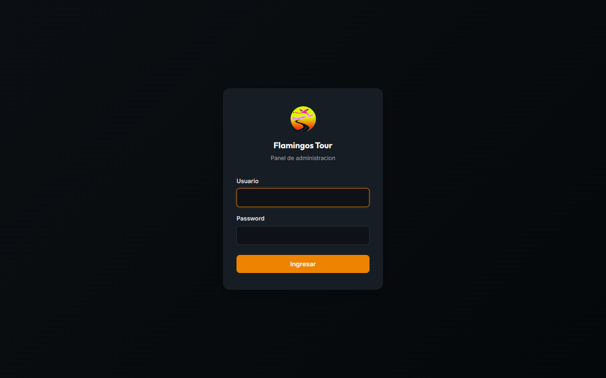
Pantalla de acceso al panel: escribe tu usuario y contraseña y confirma con el botón naranja.
Para iniciar sesión
1
Abre la dirección del panelEn tu navegador entra a la dirección de tu sistema y agrega /admin al final.
2
Escribe tu usuarioTu nombre de acceso de administrador.
3
Escribe tu contraseñaPor seguridad aparece como puntos.
4
Presiona «Ingresar»Entrarás directo a tu panel principal.
Seguridad: no compartas tu contraseña. Si necesitas cambiarla, solicítalo a tu proveedor (GLA) para actualizarla de forma segura.
Para salir, usa el botón Cerrar sesión que está al final del menú lateral, especialmente si entras desde una computadora compartida.
5
Panel principal (Dashboard)
Es lo primero que ves al entrar. Te da un vistazo rápido de cómo va tu negocio: cuántos clientes han pedido información y cuántos ya reservaron.
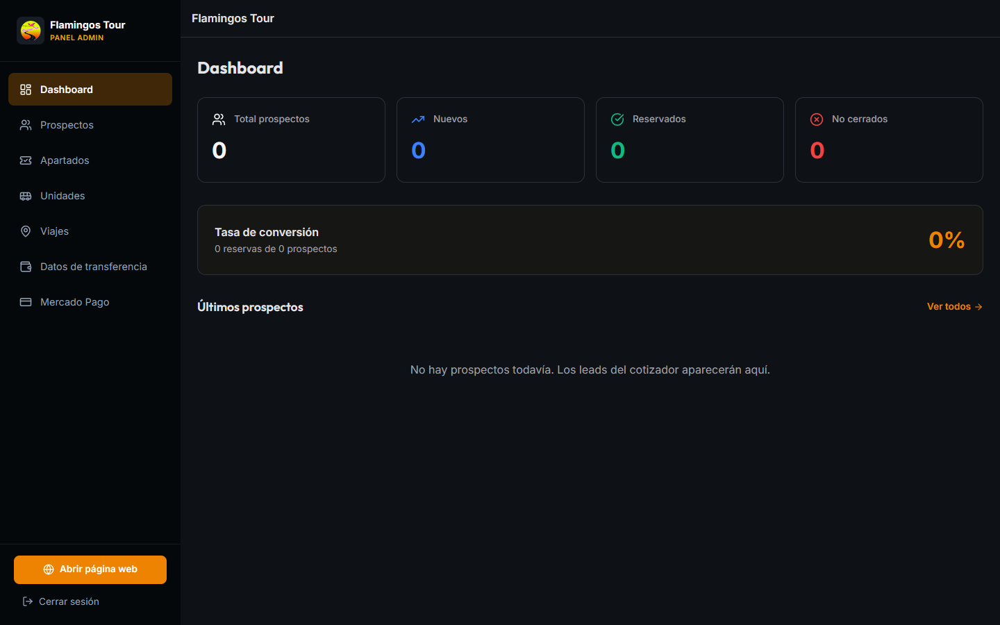
Panel principal con los indicadores clave y la lista de los prospectos más recientes.
Qué te muestra
Total prospectosTodas las personas que han cotizado por tu sitio.
NuevosContactos recién llegados que aún no atiendes.
ReservadosClientes que ya apartaron o reservaron.
No cerradosCotizaciones que no llegaron a reserva.
También verás tu tasa de conversión (qué porcentaje de interesados terminan reservando) y el acceso directo Ver todos hacia la sección de prospectos.
Menú lateral: desde aquí vas a Prospectos, Apartados, Unidades, Viajes, Datos de transferencia y Mercado Pago. El botón Abrir página web abre tu sitio público en otra pestaña.
6
Prospectos (clientes interesados)
Aquí vive tu base de clientes potenciales. Cada persona que usa el cotizador se registra automáticamente con su ruta, fechas, pasajeros y datos de contacto.
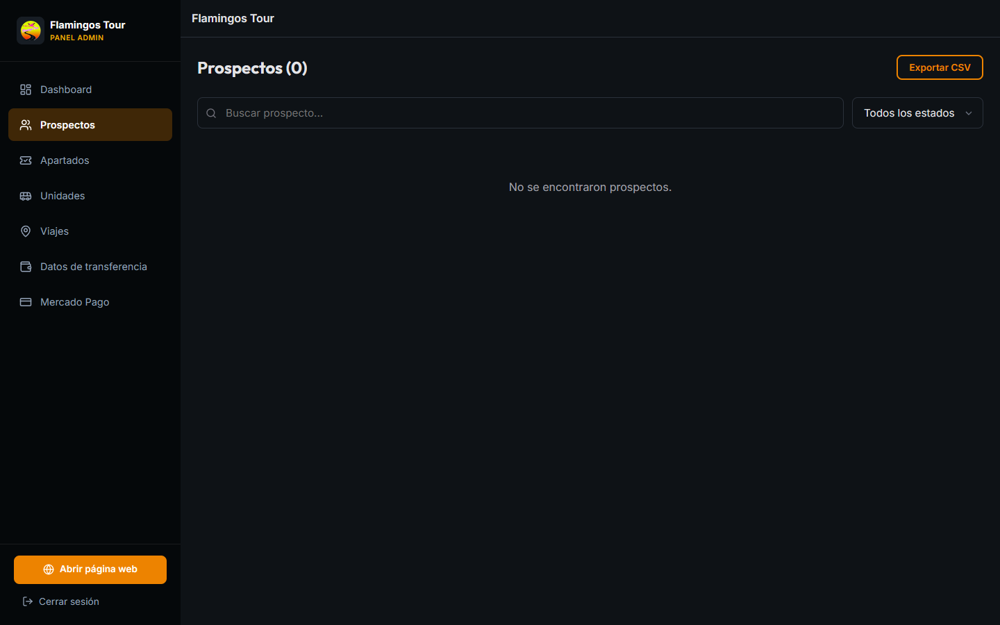
Lista de prospectos con buscador, filtro por estado y botón para exportar todo a Excel/CSV.
Qué puedes hacer
1
BuscarEscribe un nombre, teléfono, origen o destino para encontrar a alguien al instante.
2
Filtrar por estadoMuestra solo los nuevos, contactados, cotizando, reservados, con pago de anticipo o no cerrados.
3
Abrir el detalleHaz clic en una persona para ver todos sus datos y cambiar su estado de seguimiento.
4
Anotar seguimientoEscribe notas (por ejemplo «volver a llamar el viernes») y presiona Guardar notas.
5
ExportarEl botón Exportar CSV descarga toda la lista para abrirla en Excel.
Consejo de ventas: revisa los prospectos «Nuevos» cada día y cámbialos a «Contactado» cuando ya los hayas atendido. Así sabrás con claridad a quién le falta seguimiento.
7
Apartados y verificación de pagos
Cuando un cliente aparta su viaje (por transferencia o con Mercado Pago), aparece aquí. Esta es la sección donde confirmas o rechazas los anticipos.
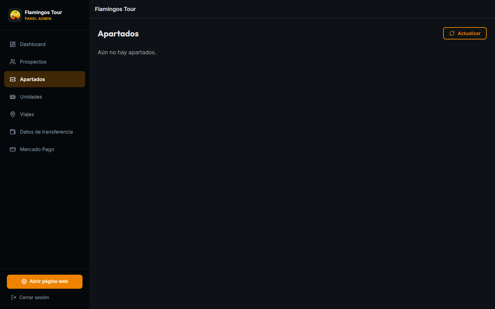
Tabla de apartados con folio, cliente, destino, unidad, monto, método de pago, estado y acciones.
Como confirmar un apartado por transferencia
1
Busca el apartadoLos pagos por transferencia llegan con estado «Pendiente de verificación».
2
Revisa el comprobanteHaz clic en el enlace «comprobante» para ver la captura que subió el cliente.
3
Confirma o rechazaUsa el botón verde ✓ para confirmar o el rojo ✕ para rechazar.
El botón Actualizar vuelve a cargar la lista para ver los apartados más recientes o confirmar pagos hechos con Mercado Pago.
8
Unidades (tus vehículos)
Administra tu flota. Lo que agregues aquí aparece en la página web (sección «Nuestras unidades») y alimenta al cotizador para calcular precios.
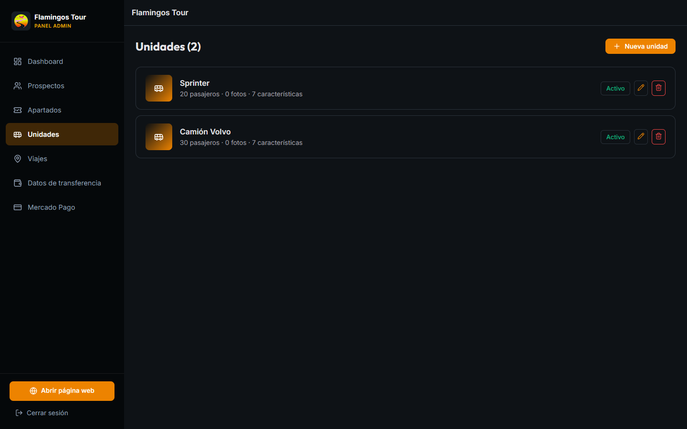
Listado de unidades. Cada una tiene su capacidad, fotos, equipamiento y la opción de activarla o desactivarla.
Para agregar o editar una unidad
1
Presiona «Nueva unidad»Se abre una ventana con el formulario.
2
Llena los datosNombre, capacidad de pasajeros, descripción, recargo por temporada y equipamiento.
3
Sube fotosAgrega las imágenes del vehículo y marca una como principal.
4
GuardaLa unidad queda lista para mostrarse en la web.
Activar / desactivarUna unidad desactivada no aparece en la web ni en el cotizador, pero no se borra.
OrdenDefine cuál aparece primero en la página.
EliminarCon confirmación previa; úsalo solo si ya no ofrecerás ese vehículo.
Consejo: mantén las fotos y la descripción actualizadas. Una unidad bien presentada convierte más.
9
Viajes y charters
Aquí publicas los viajes en grupo con fecha fija (los «charters»): excursiones, parques temáticos, peregrinaciones, etc. Son un producto aparte de la renta de la unidad completa.
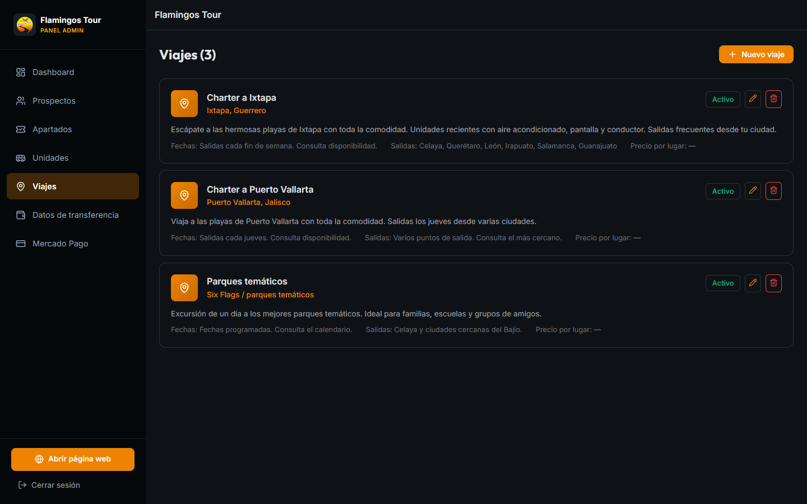
Listado de viajes programados con destino, fechas, ciudades de salida y precio por lugar.
Para publicar un viaje
1
Presiona «Nuevo viaje»Se abre el formulario del charter.
2
Completa los datosNombre, destino, descripción, fechas disponibles, ciudades de salida y precio por lugar.
3
GuardaEl viaje aparece en «Próximos viajes» de tu página web.
Reserva automática: con el viaje publicado, tus clientes pueden reservar su lugar directo desde la página. Cada reserva cae como prospecto o apartado según el tipo de viaje.
10
Datos de transferencia
Configura los datos bancarios que verá el cliente cuando elija pagar por transferencia. Es importante tenerlos correctos para que los anticipos lleguen bien.
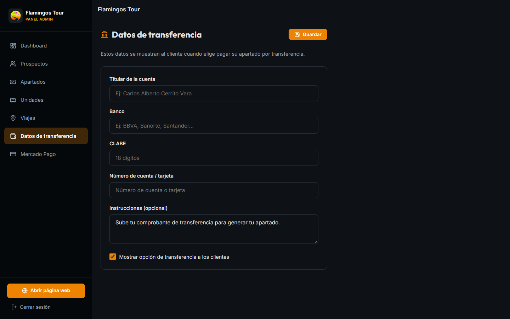
Formulario donde registras titular, banco, CLABE, cuenta e instrucciones para el pago por transferencia.
Qué llenar
Titular: nombre del dueño de la cuenta.
Banco: institución bancaria.
CLABE: los 18 dígitos de tu cuenta.
Número de cuenta / tarjeta: dato de apoyo para el cliente.
Instrucciones: mensaje opcional (por ejemplo, «envía tu comprobante por WhatsApp»).
Mostrar transferencia: casilla para activar o desactivar esta forma de pago.
Al terminar, presiona Guardar; verás la confirmación «Datos guardados correctamente».
Recomendación: revisa que la CLABE esté escrita sin errores. Un dígito mal significa que el pago no llega.
11
Cobros en línea con Mercado Pago
Con Mercado Pago tus clientes pueden pagar el anticipo con tarjeta de crédito o débito, sin que tú tengas que compartir datos bancarios. El dinero cae directo en tu cuenta.
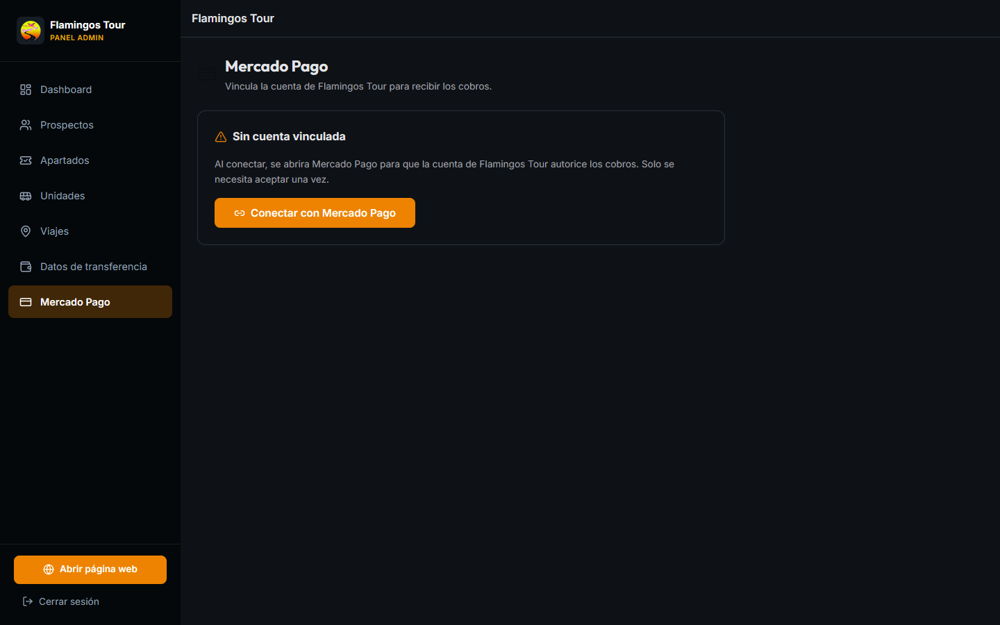
Panel de Mercado Pago: muestra si tu cuenta está vinculada y permite conectarla o desvincularla.
Conectar tu cuenta
1
Presiona «Conectar con Mercado Pago»Te llevará a la página segura de Mercado Pago.
2
Inicia sesión y autorizaIngresa con tu cuenta de Mercado Pago y acepta la vinculación.
3
ListoVerás «Cuenta conectada». El token se renueva solo.
VinculadaMuestra tu identificador y la fecha de renovación del acceso.
Sin vincularOfrece el botón para conectar tu cuenta cuando tú quieras.
DesvincularCorta la conexión si cambias de cuenta o lo necesitas.
Buenas noticias: los cobros entran directo a tu cuenta de Mercado Pago. El sistema solo facilita el pago; no retiene tu dinero.
12
Formulario de levantamiento de información
Es un formulario interno (protegido con usuario y contraseña) para recopilar toda la información de tu negocio: identidad, flota, precios, destinos, formas de pago y más. Sirve para dejar el sistema configurado a tu medida.
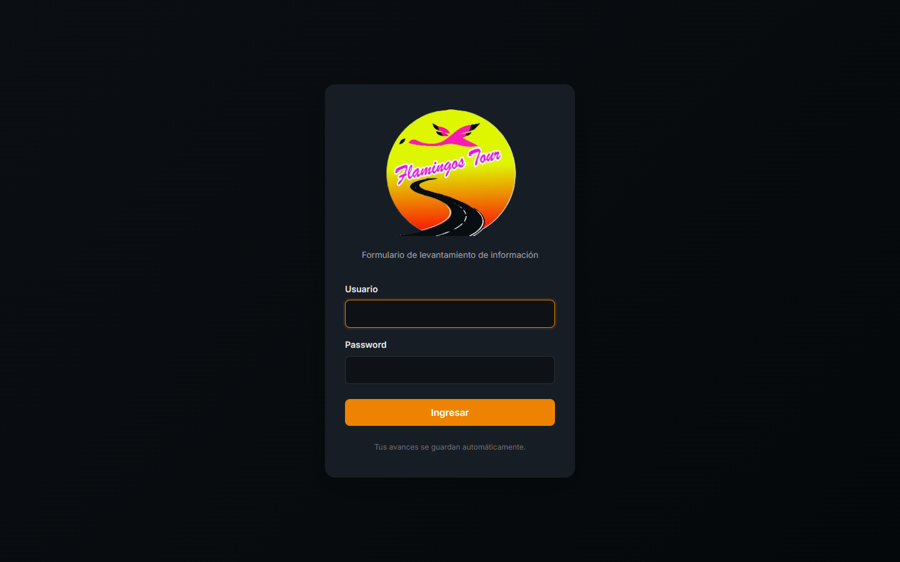
Acceso al formulario de levantamiento. Se entra con el usuario y contraseña que te proporcione tu proveedor.
Qué información recopila
Identidad y confianza: nombre comercial, historia, garantías, redes sociales y horarios.
Flota de unidades y sus precios.
Reglas de cotización: anticipo, precios por día o kilómetro, temporadas.
Destinos y rutas frecuentes.
Proceso de cierre de ventas y formas de pago.
Nota: tus respuestas se guardan solas mientras escribes. Puedes llenarlo poco a poco, sin miedo a perder lo avanzado.
13
Propuesta y datos del cotizador
Esta sección explica, en una página clara, cómo funciona el cotizador automático y qué datos hacen falta para activarlo por completo. Además incluye el formulario para capturar los precios y reglas del tarifario.
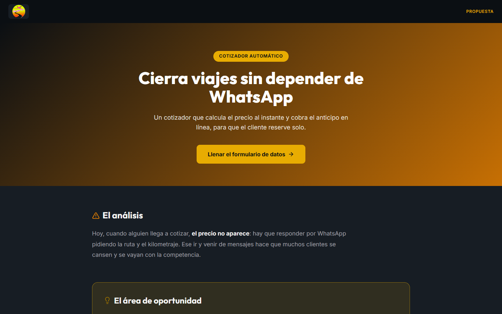
Página de propuesta: explica el valor del cotizador automático y los datos que faltan por definir.
Datos que alimentan el cotizador
Precios por unidadTarifas por día, kilómetro y hora extra.
Rutas y destinosPrecios por ruta desde tus lugares de salida.
TemporadasAjustes de precio en fechas de alta demanda.
Pagos y anticipoPorcentaje de anticipo, CLABE y activación de Mercado Pago.
Con estos datos cargados, el cotizador calcula precios precisos de forma automática y tus clientes pueden reservar sin esperar respuesta.
14
Consejos y preguntas frecuentes
Rutina recomendada
1
Revisa el Dashboard cada mañanaMira cuántos prospectos nuevos entraron.
2
Da seguimiento en ProspectosContacta a los nuevos y actualiza su estado.
3
Verifica los apartadosConfirma los comprobantes de transferencia el mismo día.
4
Publica tus próximos viajesMantén la sección de Viajes siempre con opciones nuevas.
Preguntas frecuentes
¿Puedo entrar desde el celular?Sí. Todo el sistema funciona en celular, tablet y computadora.
¿Pierdo información si cierro sesión?No. Todo se guarda en tu sistema en internet.
¿Quién ve mi panel?Solo quien tenga el usuario y la contraseña de administrador.
¿El cliente paga comisiones?Las condiciones las define tu cuenta de Mercado Pago, no el sistema.
¿Puedo exportar mis prospectos?Sí, con el botón «Exportar CSV» para abrirlos en Excel.
¿Qué hago si olvido mi contraseña?Contacta a tu proveedor (GLA) para restablecerla de forma segura.
Estamos para ayudarte: si algo no funciona como esperas o quieres agregar una función nueva, escríbenos. Tu sistema está pensado para crecer contigo.